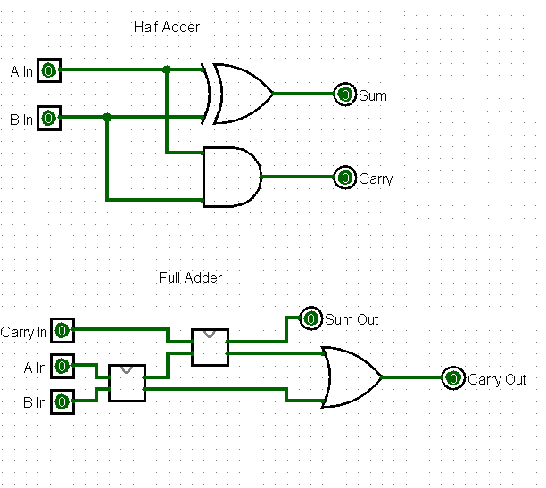
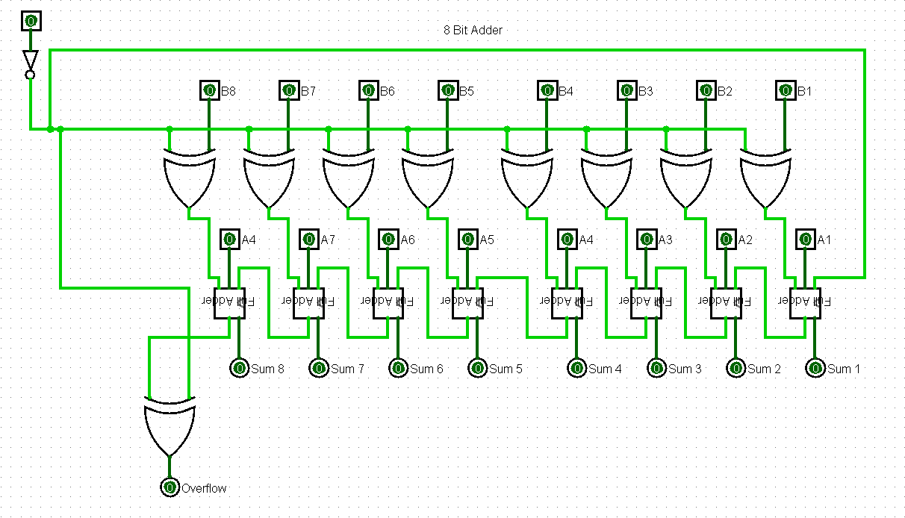
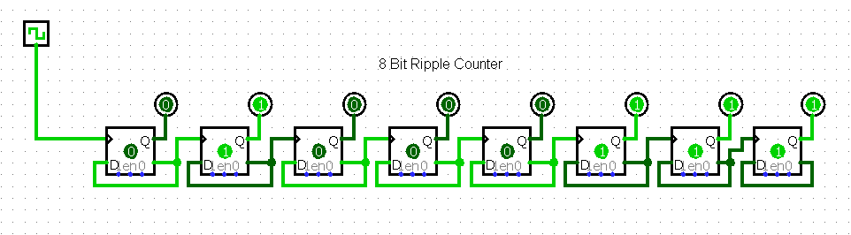
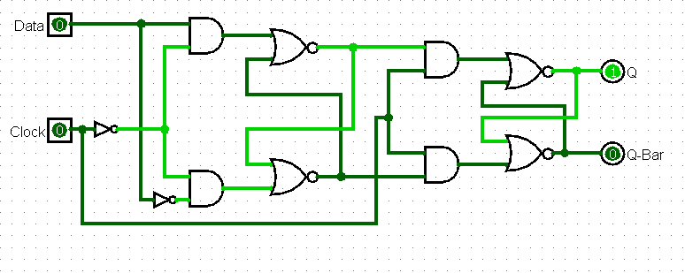

Code Answers
Home Page
Code: Hidden Language of Computer Hardware and Software Answers!
Chapter 11
- The four types of logic gates include: AND, OR, NAND, and NOR. The AND gate requires
two inputs in the closed position to power the output. An OR gate requires at least one of two inputs to be
closed for the output to power the output. NOR is a spin off of our OR gate that uses an inverter
to invert voltage, and only feeds power to the output when the input switches are open. NAND follows the same
idea but can feed power to the output as long as both switches aren't closed
Chapter 12
- A half adder consists of 8 relays jointed from an XOR gate and an AND gate, as well as 2 inputs, and 2 outputs.
- A full adder is made up of two half adders and an OR gate, with 18 relays total. The full adder however has 3 inputs, and 2 outputs.
- An 8-bit circuit contains a massive 17 inputs if you count the carry in, and 9 outputs if you include the carry out.
- 144 transistors!
Chapter 13
Half/Full Adder

Half/Full Adder Example Video
8 Bit Adder

8 Bit Adder Example Video
Chapter 14
8 Bit Ripple Counter

8 Bit Ripple Example Video
Edge Triggered D FlipFlop

Edge Triggered D FlipFlop Example Video
Chapter 15
- A byte is simply 8 bits of data.
- An unsigned byte has a range of 0 through 255, and if the two's complement is used, they can range from -128 to 127!
- The X in the binary number represents the number 32.
- Hexidecimal
- With binary being 2^x, using base 16 as a converter allows a simple group of 4-bits to be converted into a single bit.
- The X in the base 16 number represents 256.
Chapter 16
- Kilo represents 1024 bytes, and comes from the Greek khilioi, meaning 1000. Mega represents 1024 kilobytes, and comes from the word megas meaning great.
Giga represents 1024 megabytes, and comes from the Greek gigas meaning giant. Tera represents 2^40 bytes, and stems from the Greek teras, meaning monster.
Finally Peta represents 2^50 bytes.
- Relays require a constant supply of electricity to retain its contents.